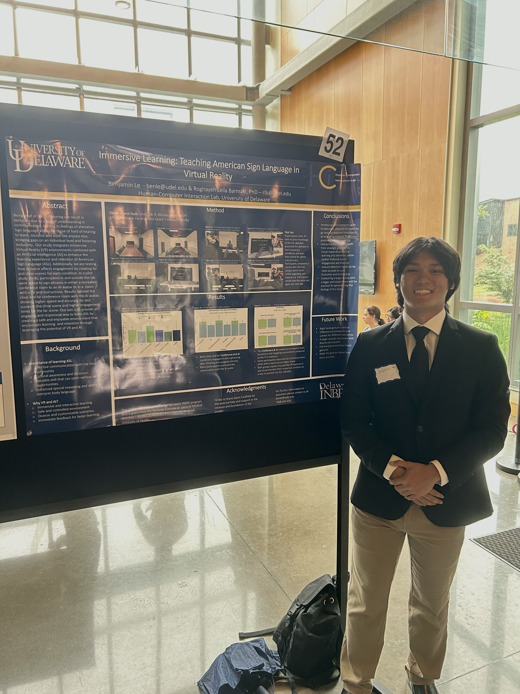
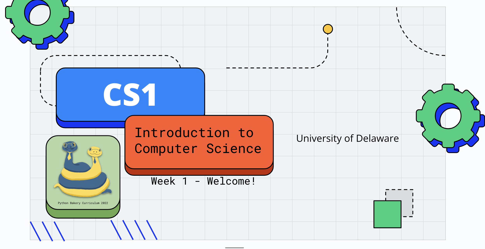
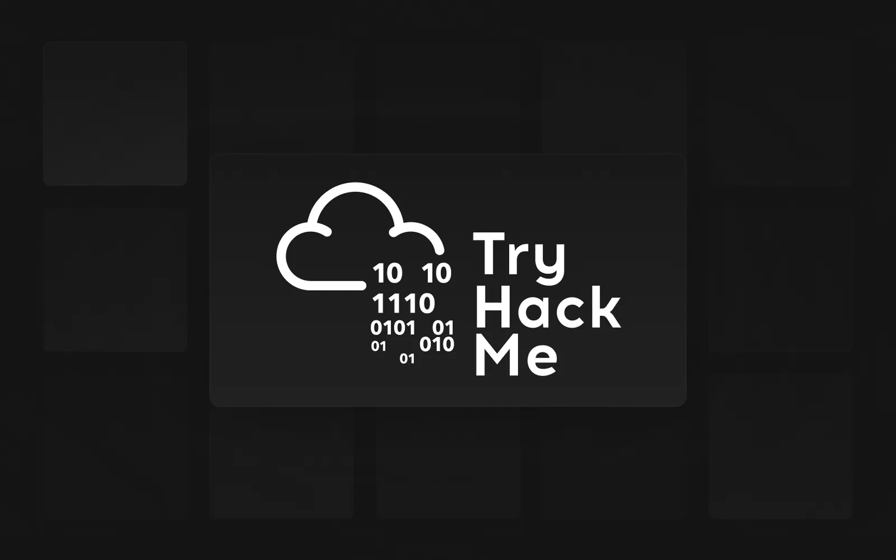
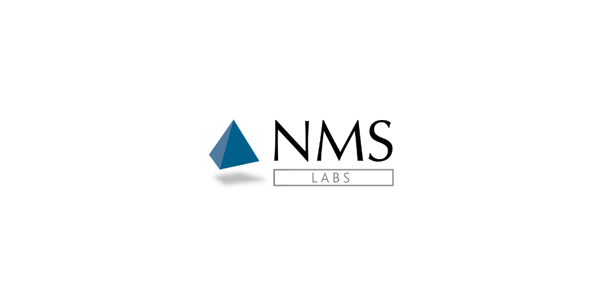
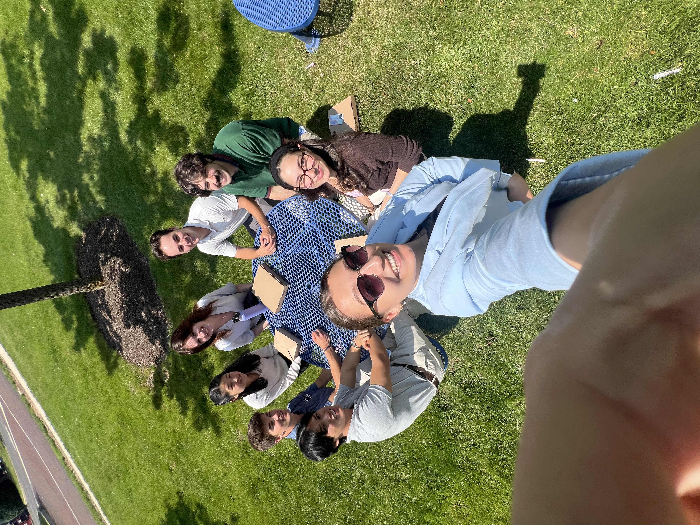
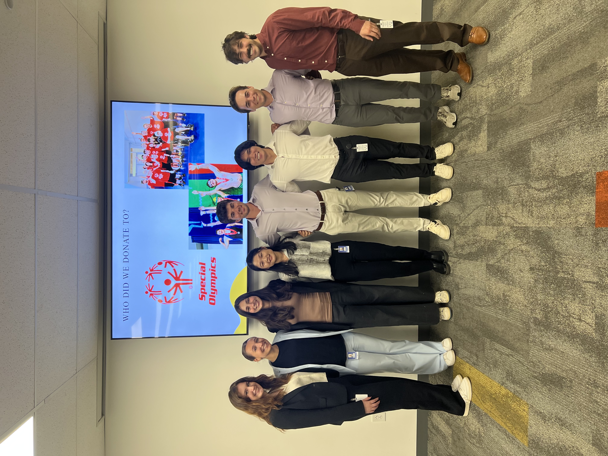
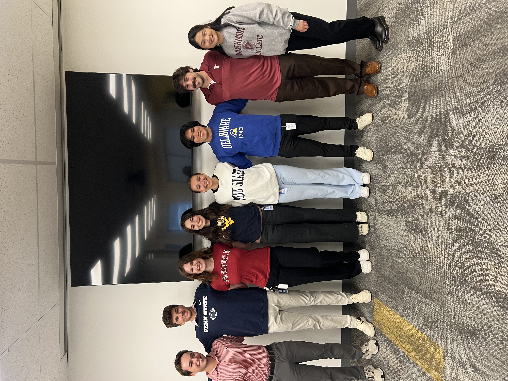

This section highlights my experiences that range from personal learning to professional work experiences. I'm always looking for opportunities to expand and grow in this area and I welcome new opportunities that allow me to innovate, collaborate, and make an impact.



My first experience with TryHackMe was an annual Advent of Cyber Event where there are 24 cyber challenges throughout the month of December. Giving me a fun and interactive hands on experience in multiple areas such as: SIEM Analysis, Digital Forensics, Network Analysis, Reverse Engineering and more.



